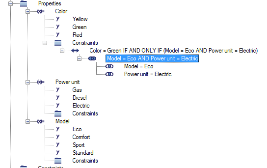

Modeling variability¶
Properties¶
The variability of a product is described by its properties. These are similar to the catalog properties in many aspects.
Note
A user must have the role Administration: Variant Management in order to be able to edit and manage the variability model.
Create¶
You can create a property either in the context of a product or in the context of a view. In the create mask, you can decide whether you would like to use a template from the property catalog or whether you would like to create a new property manually without a template.
If you use a template from the catalog, the property values are also taken from the catalog upon creation along with the master data of the property. Upon creation, note the following instructions:
- Catalog property
Catalog properties can be defined by a user specifically authorized to do so. If there is a list of catalog properties, a value can be selected from it. In general, the catalog consists of general product properties such as “comfort”, “luxury”, “standard”, etc.
- Product
The system already preassigns this field with the name of the product if you create the property from the context of a product. The value cannot be changed.
- Name (de)
Here, enter the German description for the property. This is a mandatory field.
- Name (en)
You can enter the description for the property in English here. This is optional.
- Data type
As a data type, you have the choice between
alphanumeric,numericandboolean. The selection made influences the property value entry.- Variant relevant
If activated, the property is taken into account when generating variants.
- Interface property
If activated, the property can or must be used to use the product as a module within another product (see Modular Design).
- Description
Here, you can enter another additional description of the property as free text.
- ERP code
The ERP code must be unique within a product. By default, the field is prefilled with
--auto--. If this presetting is not changed, the system automatically generates a unique value using the values that have been defined for the attributes mentioned here (e.g. Name (de)).
Note
- When you change the data type of a property the following constraints apply:
A property with data type
alphanumericcannot be changed to data typenumeric.A property with data type
alphanumericcannot be changed to data typeboolean.A property with data type
numericcannot be changed to data typeboolean.
Sorting¶
You can resort the properties within a result list or structure tree. For this purpose, use the pop-up menu operations Move up and Move down.
Note
If you resort the properties in a structure tree, you have to reload the structure by pressing F5 to see the effect.
Property Hierarchy¶
You can create property hierarchies using sub properties.
You can create sub properties in the context of a catalog property. Here the same hints apply as they do when you create new catalog properties. A sub property always needs to have a parent property.
Property values¶
Create a property value in the context of a property. Here, CONTACT Virtual Product distinguishes between numeric, alphanumeric and boolean property values. For numeric property values, it is sufficient to enter a decimal number in the create mask. When creating alphanumeric property values, note the following instructions:
- Name (de)
Here, enter the description for the property value in German. This is a mandatory field.
- Name (en)
You can enter the description for the property value in English here. This is optional.
- ERP code
The ERP code must be unique within a property. By default, the field is prefilled with
--auto--. If this default is not changed, the system automatically generates a value using the other attributes.
Note
If you create a property with data type boolean, two property values will be created and assigned automatically while creating the property. Those values are 0 and 1 and can neither be changed nor deleted. As well, no further property values can be added.
Calculated property values¶
CONTACT Virtual Product gives you the option to generate new property values automatically by combining the values of dependent properties.
To do so, you first have to assign the dependent properties to the new property. This can be carried out easily using Drag&Drop. To do so, simply drag the dependent properties onto the new property using the mouse.
To automatically generate the property values for the new property, call up the variant editor from the property pop-up menu.
You will then see a table that lists all possible value combinations. Select the combinations that are to be generated as a value for the new property and press the Save button.
You can also delete generated property values at this position.
Note
You cannot apply calculated property values to a boolean property.
Constraints¶
The possible combinations of property evaluations represent the variants. In many cases, however, not all possible combinations are desired. You can exclude certain combinations by defining constraints.
Constraints are rules that all valid variants must fulfill. However, they are also used to define mapping between product variants and view variants (see Mapping Constraints).
Constraints always use the following pattern:
<Property> <Operator> <Value> <Connective> <Expression>
Where:
<Property>is a property configured in the product<Operator>is either = or != (equal or unequal)<Value>is a value of the property<Connective>is eitherIForIF AND ONLY IF<Expression>is an expression set up via the known predicates/term logic (see Predicates and terms)
Example
Color = Green IF AND ONLY IF Model = ECO AND Power Unit=Electric
Predicates and terms¶
A constraint consists of a head part (e.g. Color != Red) and a structure of predicates and terms.
Terms display possible evaluations of properties (e.g. Color = Red or Color = Yellow). Predicates are collections of terms. Semantically, all terms of a predicate are linked with a logical AND. The predicates for a constraint are, in turn, linked with a logical OR.
Example
Constraint Color = Green IF AND ONLY IF Model = ECO AND Power Unit=Electric
Create¶
Constraints are defined via Drag&Drop. Drag a property value onto the Constraints folder below the property. This is done to create a constraint that, at first, only shows the head part (e.g. Color = Green). Then, drag a property value onto the new constraint to add a property evaluation. This creates a new predicate with the desired property evaluation as a term.
Drag a property value onto the predicate to add additional terms to a predicate. To add additional predicates to a constraint, drag a property value onto the constraint. You can also change the operator or the connective in the data sheet.
Example
For example, if you would like to define the constraint,
Color != Black IF AND ONLY IF Model = ECO AND Power Unit=Electric
proceed as follows.
First, drag the value
Blackonto the Constraint folder below theColorproperty. This creates the constraintColor = Black.Then, drag the value
ECOof theModelproperty onto the new constraint. This expands the constraint as follows:Color = Black IF Model = Eco.Now, drag the value
Electricof thePower Unitproperty onto the predicateModel = Ecobelow the constraint. This completes the constraint:Color = Black IF Model = Eco AND Power Unit=Electric.Now, in the pop-up menu of the constraint, select the Modify operation to change the operator and the connective (
Color != Black IF AND ONLY IF Model = ECO AND Power Unit=Electric).
Automatically generated constraints¶
The variant management gives you the ability to generate constraints automatically that accurately exclude exactly one variant from the solution space (see Toolbar).
These constraints are highlighted visually by a special icon and cannot be changed manually.
Note
Note here that constraints generated by the system can become invalid if properties or property values are added or deleted. The system can then no longer guarantee that these constraints exclude exactly one property.
Working with views¶
Views permit describing the product variability from different perspectives. Views are considered a differentiated setup of product structures. The design engineer views the product preferably via a functional view. The work planner likely prefers a production and assembly-oriented view, whereas Sales looks at the product from more of a sales-oriented view.
You can create a new view in the context of a product. Here, you can decide in each case whether the new view is to be used for assessing the maximum BOM. In this case, the maximum BOMs can be filtered only based on the properties of this view. If no view has been selected accordingly for assessing the maximum BOMs, the maximum BOMs are filtered based on the product properties, i.e. the properties not associated with a view. Note that you may select only one view for evaluating the maximum BOMs.
Separate properties, constraints and variants can each be assigned for a view in a way similar to that for the product.
Mapping Constraints¶
Constraints used only to map product variants to view variants are called Mapping Constraints in the system. Each constraint between product and view properties is considered a mapping constraint.
Mapping constraints are treated specially by the system compared to normal constraints. For example, its type is IF AND ONLY IF by default if this is created via Drag&Drop. Furthermore, mapping constraints may only be defined for views. If you attempt to define a mapping constraint at the product level, the system issues a corresponding error message. Mapping constraints between different views are not allowed either.
Variant Mapping¶
You can assign view variants to a product variant manually, which means that you manually create a mapping between a view variant and a product variant. To do so, drag the view variant onto the product variant in the product overview. Alternatively, you can also generate these types of variant mappings directly in the variant editor (see Combined view).
Variant mapping is evaluated both when filtering maximum BOMs as well as when instantiating parts.